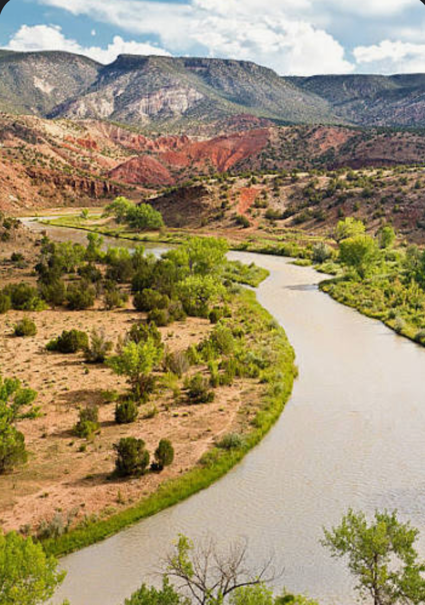
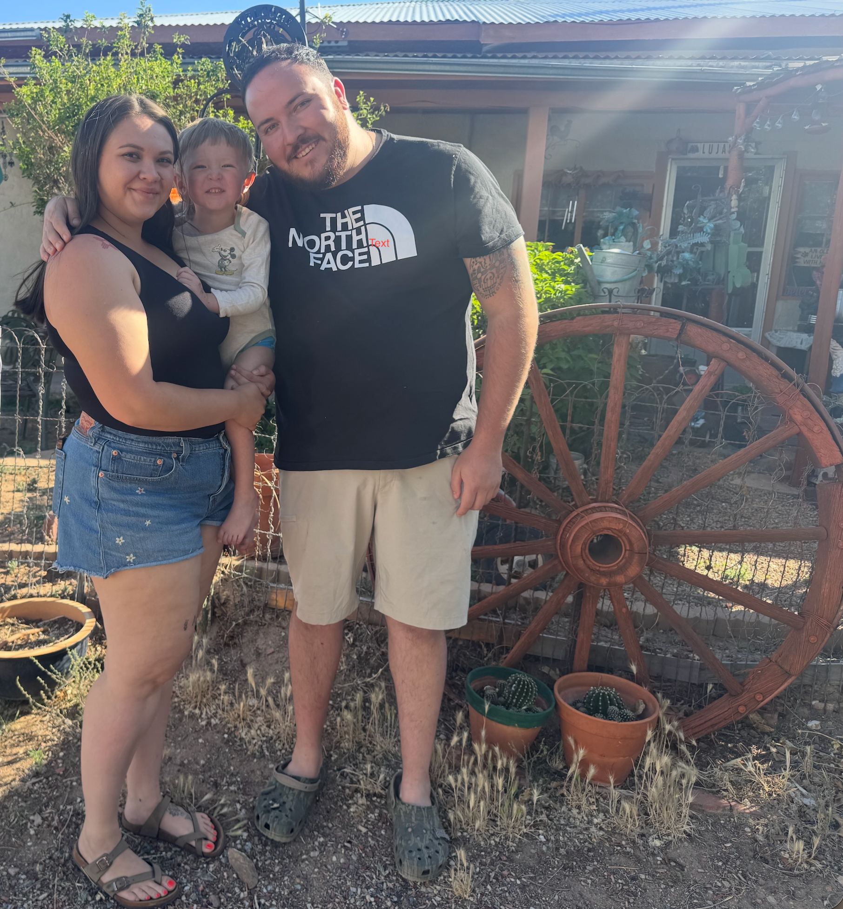

Chama roots • Family tradition
Our Story
North Star Bakery starts with a living piece of Northern New Mexico history: a sourdough starter that has been cared for for about 100 years.
The starter
Passed down, kept alive.
Our starter came to us through family friends and traces its roots to Chama, New Mexico. For generations, someone had to feed it, use it, share it, and keep it going. We get to be part of that story now.
That history is why we treat sourdough as more than a recipe. The starter changes a little with every kitchen and every baker, but the tradition continues.


Why North Star
Family, place, and something worth passing on.
North Star Bakery is built around the kind of food that brings people into the same room. Bread on the table, cinnamon rolls in the morning, brownies after dinner, and coffee while everybody talks.
Our goal is to keep the baking honest and welcoming: make it from scratch, take our time, and never lose the connection to where the starter came from.
A little piece of Chama
The landscape behind the tradition.